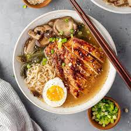

second recipe: Chicken Ramen

This recipe is for a rich, full-bodied broth. If a lighter flavor is preferred, add hot water to the resulting stock. Wasabi paste will add heat.
Ingredients :
- 4 pounds chicken wings
- 1 pound chicken feet
- 2 (12-inch) pieces kombu (see notes)
- 2 leeks, trimmed and sliced 1-inch thick
- 8 cloves garlic
- 2 bunches scallions, whites reserved, greens thinly sliced, divided
- 1 onion, skin-on, halved
- 6 ounces fresh shiitake mushrooms, washed and trimmed
- 2-inch piece ginger, sliced
- Kosher salt
- 6 shallots, peeled and sliced thin
- 1/2 cup vegetable oil
- Chicken bouillon cubes (optional, see notes)
- 6 servings of fresh, dried, or frozen ramen noodles
- Toasted white and black sesame seeds, coarse ground
- Sesame oil
- Marinated soft boiled eggs
- Wasabi paste (optional)
Directions:
- Place the chicken wings and chicken feet in a large stockpot and cover with cold water. Heat over high heat and bring to the boil. Remove from heat as soon as boil is reached, carefully strain, gently rinse, and return chicken to pot (see note).
- Add kombu, leeks, garlic, scallion whites, onion (skin side up), mushrooms, and ginger to chicken. Cover with cold water (about 16 cups) and bring to boil over medium-high heat. Reduce heat to maintain a simmer.
- Skim impurities (but not the fat) from the stock as it simmers and remove kombu after 30 minutes. Continue to simmer stock uncovered (adding hot water to keep bones submerged) for 8 hours (see note). Remove from heat and carefully strain through a fine mesh strainer. Do not skim fat (see note). You should have about 10 cups stock.
- To make fried shallots, place oil and shallots in a medium saucepan. Cook over medium heat, stirring, until shallots are crispy and golden brown, about 5 minutes. Remove shallots with slotted spoon and transfer to plate. Reserve oil for another use.
- To serve, season broth with a generous amount of salt (see note). Serve with cooked ramen noodles, sesame seeds, sesame oil, fried shallots, thinly sliced green scallions, marinated egg, and optional wasabi paste.
and now lets move to the next recipe ^-^
Beef ramen